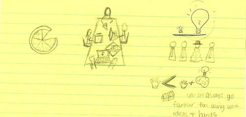
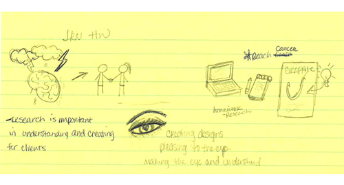
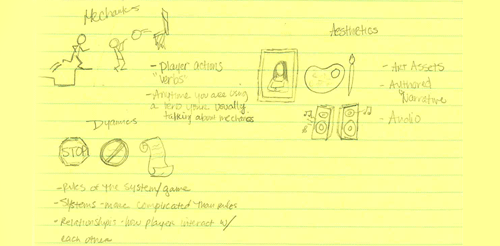
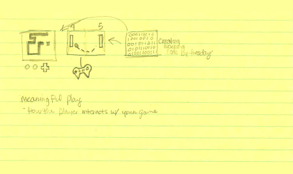

In my Info Graphics Jornalism class this day was more so a free day for those who attended. We did not have a lecture due to some of our class mates missing class for a project we have coming up. Although we didn't have class, I still attempted to sketch the class period. The pizza is a really basic graphic because its usually very easy to interpret. Our professor did go over some concepts briefly, which are as followed: Think Big, don't be afraid to stand out, and also use your mind/ideas and hands rather than just being told what to and used for your hands. 
Thursday we first discussed the homework for the following week. Instead of just writing down all the homework and details, I decided to sketch it. We were to brainstorm ideas for a graphic, with our partner. We were also suppose to do some research and note taking on the topic. The class lecture focused on hooking the viewer to our graphic. We discussed how to create visually pleasing art that contains vauable information. Idecided to just try an eye with an heart to grasp the overall topic. 
Wednesday in my web and mobile game design class, we went over MDA for games as well as meaningful. Although I feel I did an okay job sketching and getting the ideas, I maybe could have drown more detailed figures so that I would have to write less notes to understand the graphics.  